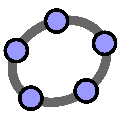

Sobre o Projeto
O Projeto REDMAT (Recursos Educacionais Digitais para o ensino/divulgação da Matemática) é uma jovem iniciativa da Universidade Federal Fluminense (UFF) que busca aproximar a matemática da sociedade por meio de tecnologias digitais.
Desde 2021, o REDMAT desenvolve recursos inovadores, como e-books interativos, vídeos, animações e aplicativos, elaborados em colaboração com estudantes de graduação que atuam no projeto. Esses discentes participam ativamente, auxiliando professores em projetos de ensino ou extensão, contribuindo com ideias criativas e modernas para tornar o aprendizado mais dinâmico e significativo. Além disso, o REDMAT se destaca por sua presença nas redes sociais, como o Instagram @redmatuff, onde divulga conteúdos educativos, interage com o público e amplia o alcance de suas ações.

Projetos de Ensino relacionados ao projeto REDMAT
-
Recursos Computacionais com Python (2023)
-
FCG (2023---)
-
Tecnologias de ensino (2020---)
-

GeoGebra 3D (2020-2022)
-
GACV (2020-2022)
-
Disciplinas no distanciamento social (2020-2021)
Livros eletrônicos e apostilas
-
Cálculo com Geobebra 3D vol. I
-
Cálculo com Geobebra 3D vol. II
-
Geometria Analítica com Geogebra
-
Apostila Cálculo Diferencial de Várias Variáveis
-
Apostila de Fundamentos de Cálculo e Geometra. Capítulo de Funções.